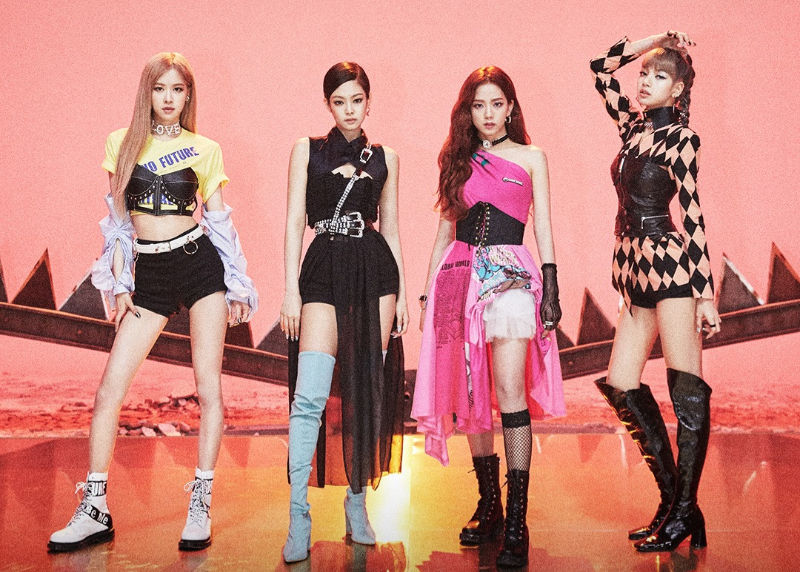

Sobre
O BLACKPINK é um grupo sul-coreano de k-pop formado pela YG Entertainment em 2016. O grupo é composto por quatro talentosas integrantes: Jisoo, Jennie, Rosé e Lisa. Desde sua estreia, o BLACKPINK tem sido uma das forças mais proeminentes e influentes na cena musical tanto na Coreia do Sul quanto internacionalmente.
O grupo é conhecido por seu estilo musical diversificado, que abrange uma ampla gama de gêneros, incluindo pop, hip-hop e EDM. Suas músicas muitas vezes combinam elementos cativantes e letras envolventes, o que as torna incrivelmente populares entre os fãs.
Os videoclipes do BLACKPINK são notáveis por sua produção de alta qualidade e estética visual impressionante. Eles frequentemente incorporam moda elegante, cenários elaborados e coreografias cativantes, contribuindo para uma experiência visual única para os espectadores.
Além da música, o BLACKPINK também se envolve em atividades de moda, tornando-se embaixadoras de marcas de renome e sendo reconhecidas como ícones de estilo. Sua influência abrange além da música, alcançando a cultura pop e a moda global.
O BLACKPINK também é conhecido por estabelecer recordes e conquistar marcos notáveis. Seus vídeos no YouTube costumam bater recordes de visualizações, e o grupo continua a expandir sua base de fãs dedicados, conhecidos como "Blinks".
Voltar